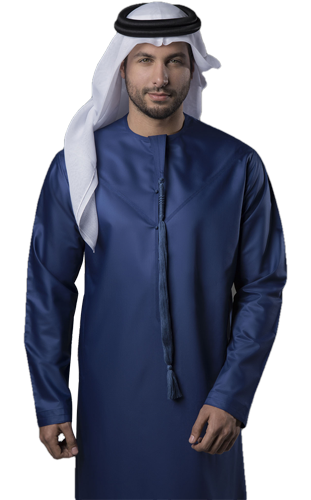
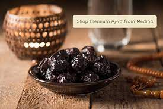
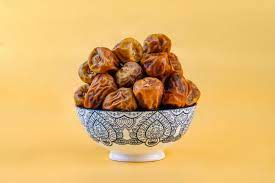
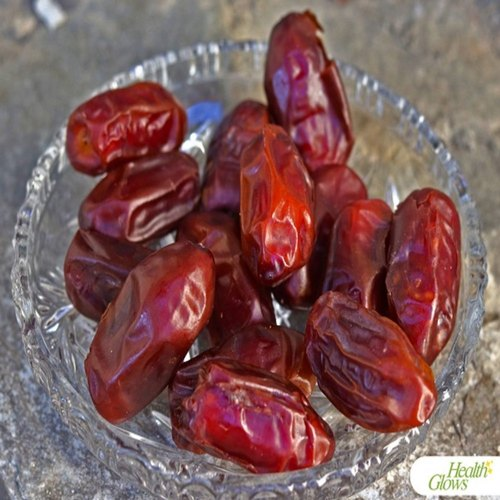

|
This garment is from Saudi Arabia and it's recognisable due to big collar and cufflinks. This is a garment from Kuwait and it's recongnisable due to its collar style and also a thin thread in the middle of the garment. This is UAE garment and it's uniqueness is the thing that hangs in the middle of it and no collar. |
|

Ajwah dates are the most popular dates to the +1.7 billion muslims. Ajwah dates are soft and black in colour. Comes in three sizes; small, medium and large. Ajwah date contains the following benefits:

Sukkari dates are beautiful, soft, golden dates that are large. Sukkari dates are charecteristically very sweet, abd they are more succulent than standard dates. This type of date has the following health benefits:

Khudri dates are moderately sweet with a nice 'date' flavour, chewy but not dry.These types of dates have a smooth dark brown colour, not too wrinkly. Khudri comes in both small and large sizes. Khudri dates have the following benefits:
|